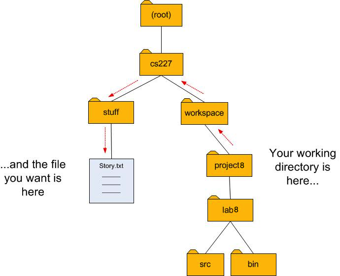

The File Class
The Java libraries provide a class called
File
that represents an abstract file name and path. It has methods for examining
and modifying the properties of files and directories. Some useful methods of the
File class are illustrated in the snippet below.
File file = new File("story.txt");
System.out.println(file.exists()); // true if the file exists
System.out.println(file.getName()); // name of the file
System.out.println(file.getAbsolutePath()); // absolute path to the file
System.out.println(file.length()); // size of the file
Try adding the lines above to your main method and see what
the output is.
Using a relative or absolute path to a file
When you run your code from Eclipse, it treats the project directory as the "working directory" for the program. If you are trying to read a file and you don't have the file in the project directory, you can still get to it using an absolute or relative path. For example, suppose your project directory isU:\cs227\workspace\project8 but the file "story.txt" is
located in U:\cs227\stuff\, as shown:

You can specify the file's location as an absolute path, starting from the root of the filesystem:
File file = new File("U:/cs227/stuff/story.txt");
It is often simpler and more reliable to use a relative path. Use the string ".." (two dots) to mean,
"go up to the parent directory." In the illustration above, to get from the project8 directory
to the file story.txt you describe the directions as follows:
- Go up one level to the
workspacedirectory. - Go up one level to the
cs227directory. - Go down into the
stuffdirectory. - Open the file
story.txt.
File file = new File("../../stuff/story.txt");
File paths in Java strings
Note that even though Windows always uses backslashes (\) for the path separator character, Java allows you to use either backslashes (\) or forward slashes (/). The catch is that if you want a backslash character in a Java string, you have to type two backslashes. (The backslash character already has a special meaning in Java strings, so when you really want a backslash, you have to write "backslash backslash".) So the absolute path would look like this:
File file = new File("U:\\cs227\\stuff\\story.txt");
and the relative path would look like this:
File file = new File("..\\..\\stuff\\story.txt");